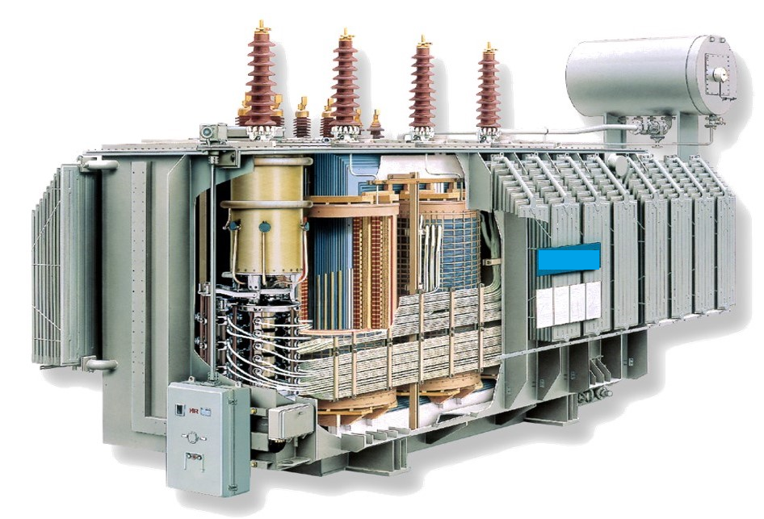
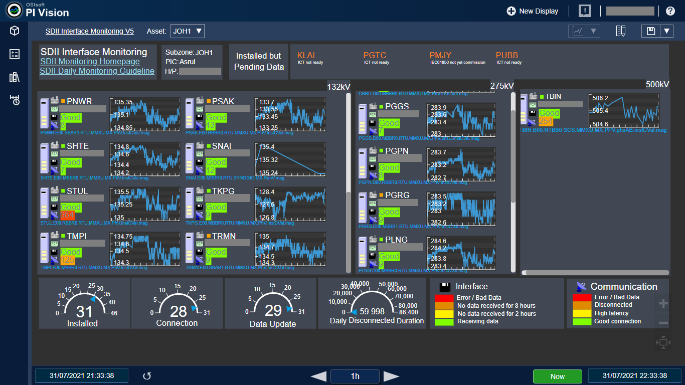
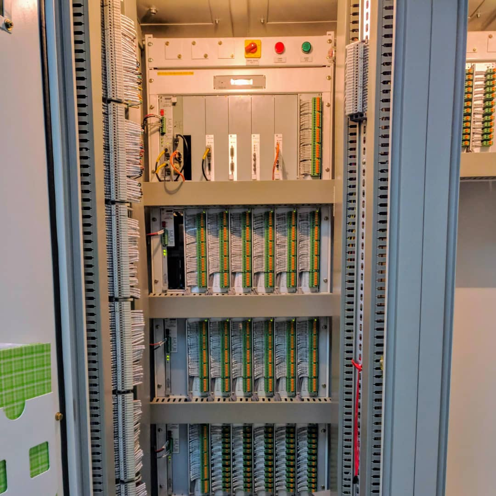

Who is Ngau Wah Xian?
Data Analyst | Data Engineer | Electrical Engineer
I am an avid aficianado of data. Working in the data realm has shown me how much data analytics can impact everyday life. The confluence of data and my programming skills has enabled me to contribute millions in terms of cost savings for my company. I am also actively involved in grid automation projects to enable smart grid. I am a fast learner, agile and a problem solver which enables me to quickly pick up relevant skills as required.
My
Skills
I am adaptable and a fast learner enabling me to pick up new skills as required
Here are some of my core competencies

Data Analytics
My algorithms help save companies millionsI have developed several algorithms for advanced monitoring of equipment, allowing for remote and condition based monitoring of equipment and allowing for smart dispatch of work orders, saving millions in man-hours.

Data Engineering
Database design and set upI helped set up high availability database systems in the cloud and maintain data availability and integrity. I have experience in SQL, Python scripting, Connectors, Web APIs for querying and analysis.

Data Visualization
Tableau, PI Vision, ExcelSky is the limit when it comes to visualization. I can do visualizations in Tableau, PI Vision or even Excel Pivot Charts to name a few. It helps my company understand issues at one glance and make smarter decisions.

Machine Learning
Predictive ModelsI can do machine learning algorithms in Python using libraries like scikit learn, pandas, numpy, matplotlib etc. I have done predictive regression algorithms for feasibility studies.

Automation
Automation = EfficiencyI help my company save millions every year by getting rid of tedious processes by replacing them with automation. I use a combination of Python scripts, Bash scripts, Excel VBA to develop applications for task automation and reporting. Not only does it save time it also reduces human errors.
Grid Automation
Real Time Response to contingency eventsI implement various special protection schemes to handle contingency events in the grid operation to prevent cascading effects that causes blackouts and catastrophic damage to the Malaysian Grid.

Linux Server Administration
Ensure data availabilityI manage the maintenance of a fleet of 400+ Linux Servers constantly feeding real-time time-series data points into our databases. I automate health and connectivity reports using bash and various APIs
Portfolio
Projects
A list of some of my work commitments
Some personal Projects too
-
Operational System Trip Detection
Real-time Anomaly DetectionWritten an algorithm to stream data from substation data and compute system anomaly. Collected data from various time series data points to compute Tripping status within 10 seconds to allow for quick investigation and dispatch of personnel. Allowed for quick restoration of faults to reduce system down time.
-

Predictive Transformer Health Index
Through Fault Current Algorithm in TransformersTransformers are easily one of the most expensive equipment in the Malaysian Grid. Therefore it makes sense to give them a bit more care. Through Faults have a significant impact to the longevity and fault withstanding capability of the transformers as it breaks down its insulation and winding. Using the data we have collected and Intelligent Electronic Devices (SEL 751 and AXION), I have written an algorithm to capture the through fault energy that go through the transformers to predict the remaining fault withstanding capability of the transform
-
Large Scale Solar (LSS) Study
Machine Learning Regression Model to Forecast DemandIn this project I used a mixture of Jupyter Notebook, Scikit Learn, Pandas, Numpy libraries in Python to predict the demand of Malaysian consumers in 2030. This enables us to plot graphs against demand and projected demand to form a Duck Curve. Using this data, we can determine if Battery Energy Storage systems are required to prevent curtailment and loss of income.
-
High Availability Database System
Terabyte Scale Time Series Osisoft PI Historian SystemI am involved in the architecture and setting up of the enterprise PI Historian system in my company cloud infrastructure. I am in charge of maintaining 400+ Linux Servers feeding data into the database system. I also take part in exposing the data in a hierarchical format and designing and implementing dashboards
-

Integration with Data Warehouse
Using Existing Data for Advanced AnalyticsI am in charge of extracting asset data from existing Cloudera Hadoop Data Warehouse using Impala to for SQL Querying. The tedious task of relationsip forming is then automated to match existing entires to the PI Historian Database. With this we were able to link faults insights to the physical asset
-

Database Modelling and ETL Tasks
Create Analysis Databases to store insights from Data AnalyticsI am in charge of developing Analytical Databases and Models adhering to normalization rules. Using various connectors and Web APIs, I was able to perform extract, transform and load (ETL) tasks to populate required data points. The extraction process involved multiple data sources, the transformation step involves applying algorithms on the sourced data and the output is then loaded into the required database
-

Data Health Reporting Dashboard
Automated Reporting and NotificationI am in charge of setting up methods to monitor data health and anomalies in our data pipelines. Several approches are included, including connection monitoring, data streaming monitoring, latency monitoring etc. These were broken down into categories for easier monitoring by stakeholders
-

Sequence of Events and Alarms Dashboard
Advanced Fault TroubleshootingI have developed a alarms list dashboard for easy troubleshooting of fault events. This was done with Excel VBA with PI Software Development Kit. Data is extracted and viewed in a sequenc of event format sorted by time with millisecond accuracy. This enables Engineers to quickly follow the story to identify root causes of issues.
-
Data Validation Dashboard
Accurate ReportingI automated the daily quality analytics of recorded data. This was done by comparing historical data with a true range. The data will be flagged if it falls out of the range. This is done for 50k tags on a daily basis during midnight. It enables us to have the confidence to base our analytics on the historical data
-
Data Standardization
Normalization and Standardization of DataIn order to ease data extraction, our data has to be normalized and standardized. This process is incredibly challenging and is prone to human errors. I have developed a consolidated tool in Excel VBA for configuring data points in the database and data collection device.
-

Equipment Configuration Automation
Fast and Accurate Configuration for better Data RetrievalReversed engineered the textual configuration file of Remote Terminal Devices and writted scripts to efficiently and accurately configure devices like RTUs, IEDs etc. This has reduced the configuration time by 90% and complexity significantly. Incorrect configuration by human errors are also significantly reduced. This has saved my company > RM2 Million (quoted by external vendor)
-

Alarms Web Scraping
Scraping Web Content for MonitoringIn cases where access to databases are limited, I resort to web scraping methods to extract and consolidate data for internal dashboarding use. This enabled my team to identify the current status of various alarms signals and apply Pivot Tables to analyse chattering issues
Contact
Wah Xian
Feel free to contact me for any enquiries
I look forward to connect and hear from you!